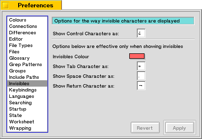

Invisibles
This page allows you to change preferences that influence the way invisible characters are displayed.
If you open text files originating from other platforms, these files may contain characters that are not available on BeOS. These characters can be divided into two categories. The first are control characters, i.e., characters with an ascii value between 0 and 31 or 127. These characters will always be displayed with the character entered in the first edit box.
Some of these control characters, however, do have a meaning on BeOS. These are the Tab character, the space character and the linefeed character. Normally, these characters don't show since they specify so-called space. You can turn on "Show Invisibles" with the context menu, or with the Window Options dialog. This will display these three characters with the characters entered in the three edit boxes. The colour used for drawing these characters can be chosen with the colour control.
What remains are the characters that seem to be valid UTF-8 characters but don't have a glyph in the current font. These characters will either be drawn with a square box or not at all. Since BeOS does not yet offer the capability to recognize these characters, there is no way you can choose your own character for displaying them.
Last updated: 11/13/98
Copyright 1997,1998, © Hekkelman Programmatuur,
info@hekkelman.com